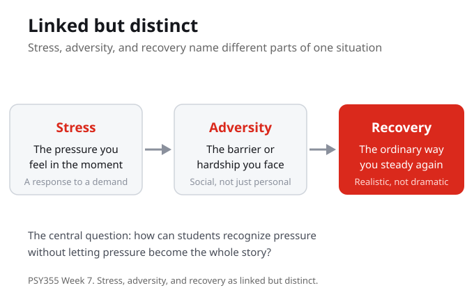

Linked but Distinct
This week consolidates the first half by naming stress, adversity, and recovery as linked but distinct. Stress is the pressure you feel in the moment. Adversity is the barrier or hardship you face. Recovery is the ordinary way you steady again. Keeping them apart is what lets you read a situation clearly instead of treating one bad feeling as the whole story.
Stress, adversity, and recovery are linked but distinct. Naming them separately is what keeps a single pressure from becoming the whole story.
In a recent academic pressure, can you separate the stress, the adversity, and the recovery rather than blurring them together?
Recognizing Pressure
The central question is how students can recognize pressure without letting pressure become the whole story. Naming a pressure is not the same as being defined by it. The week uses a short lecture frame, source guided reading, guided notes, and one low stakes practice activity. The goal is to make the psychology useful without turning the week into a personal disclosure task.
Recognizing pressure is not the same as being ruled by it. The week stays descriptive, not confessional, so the psychology stays useful.
When a pressure feels large, what helps you name it without letting it become the only thing you can see?

Adversity as Social Ecology
Lopez describes adversity as social ecology rather than individual weakness. A barrier sits inside a context of supports and conditions, not only inside a person. Weight studies adversity and resiliency in student experience, and Cassidy connects resilience building in students to academic self-efficacy. Read across the three: where does the model help, and where does it need context?
Adversity is social ecology rather than individual weakness. Resilience builds through context and through academic self-efficacy, not through willpower alone.
When you face a barrier, which parts sit inside the situation around you, not only inside you?
Separating Stressors, Responses, and Supports
One way to read a pressure is to separate the stressor, the response, and the support. What is happening, how are you reacting, and what support exists around you? Pulling these apart keeps a hard moment from collapsing into a single overwhelming thing, and it points toward a concrete action that fits without pretending the barrier is simple.
Separating the stressor, the response, and the support turns one overwhelming moment into parts you can read and act on.
For a current pressure, name the stressor, your response, and one support: which part is easiest to change first?
Recovery in an Ordinary Form
Recovery does not have to look dramatic. The reflection for the week asks what recovery would look like in a realistic, ordinary form this week. That is also the practice: a private midcourse check naming pressure, response, support, and one next adjustment. It is descriptive, not confessional, so it stays low stakes.
Recovery in a realistic, ordinary form is the aim. The midcourse check stays descriptive and private, so it supports the work without becoming a disclosure task.
What would recovery look like in a realistic, ordinary form for you this week?
What You Are Learning This Week
Linked But Distinct
Stress, adversity, and recovery are linked but distinct. Stress is the pressure in the moment, adversity is the barrier you face, and recovery is the ordinary way you steady again. Keeping them apart lets you read a situation without treating one bad feeling as the whole story.
Recognize Pressure Without Being Defined By It
The central question is how students can recognize pressure without letting pressure become the whole story. The week stays descriptive, not confessional, so naming a pressure becomes a tool rather than a disclosure task.
Adversity Is Social Ecology
Lopez describes adversity as social ecology rather than individual weakness, so a barrier sits inside a context of supports and conditions. Weight shows adversity and resiliency in student experience, and Cassidy ties resilience building to academic self-efficacy.
Recovery Can Be Ordinary
Recovery does not have to be dramatic. Separate the stressor, the response, and the support, then choose one concrete action that fits without pretending the barrier is simple. The private midcourse check names pressure, response, support, and next adjustment.